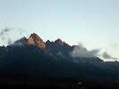
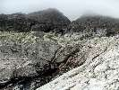
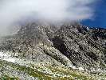

Stretol som Gubalu
2012 · Slovensko, Vysoké Tatry
Stretol som Gubalu
alebo
ako predsedníctvo, dva dni pivo na Lomničáku pilo...
Vysoké Tatry 2012
2x Lomnický štít, cesta Komarnických a Puškáš
no konečne mi dal Predseda priestor na našich klubových stánkach aby som napísal pár riadkov o našom výlete v Tatrách, pravdupovediac bolo mi vopred jasné, že to sadne na mňa, lebo aktívnych členov v našom klube akosi ubúda, a pri zostave Predseda, Horár a ja, je nad slnko jasné na koho tento príspevok pripadne...
Takže v horeuvedenej zostave sme sa dohodli, že vyrazíme v končiacom lete a v nezačatej jeseni na lezecký výlet do Tatier, teda pôvodne sme skúšali osloviť dvojku Fištrón a Ľubo,síce nerád to píšem, len sa stáva z toho tušim už pravidlo, že ako na potvoru, vždy im do toho niečo strašne dôležité prišlo.. ano aj tentokrát. V sobotu večer sme sa stretli v našom novom BC v Novej Lesnej, síce každý išiel po vlastnej osi, ale pivo sme otvárali súčasne. Večer bol naozaj v uvoľnenej atmosfére tešiac sa na krásne dva lezecké dni pre nami. Večerné témy sa striedali jedna za druhou (najmä tá záhradkárska), ved sme sa v lete málo stretali, teda všeličo nové som sa aj dozvedel napríklad aj to, že Horár stretol na svojej letnej dovolenke v Tatrách Gubalu. Stále mlel o Gubalovi,že to je „dobrý“ chalan a tak.., tušim bolo aj dosť hodín, kým sme rozdelili ležiaci poriadok, spalo sa dobre, ved spoločnosť nám robila do neskorého večera mimoriadne jemná, podmanivá, šarmantná slivovica ročník 2011 vlastej (mojej) produkcie, až tak, že Predseda nás s ňou chcel tajne podviesť a v okamihu, ked si myslel, že už spíme chcel neobratným spôsobom horeuvedenú dámu vytiahnuť z chladničky čo sa mu nepodarilo a my sme ho načapali ako si ide ulievať štamprlu, ako on sám povedal „na hrdlo“. Ale lupol ju do seba tak rýchlo, že sme nestihli nato zareagovať a bola v ňom rýchlejšie než by s řekl švec, dokonca sa mi zazdalo, že v tom istom okamihu už bol opäť v posteli a poťahoval – rozumej chrápal zapchatým nosom.
Deň 1. Lomnický štít „cesta Komárnických“ za III, obtiažnosť nie moc ťažká pri nájdení správnej cesty,lenže treba ju nájsť..:)
http://www.tatry.nfo.sk/cesta.php?obr=stity//0458//04580602.p
Vstavali sme veľmo skoro, ešte slnko ani vrchol Lomničáku neoblizovalo a my už sme na balkóne počasie čekovali, analýza však dokázala hovno (Slobodná europa). Nasleduje raňajšia očista. Zrkadlo – rychlo umyť zuby, tvár, párečky, čaj, kávička, všetko užívame naplno, vieme moc dobre, že dnes bude dlhý deň – ak to pojde dobre, ak budú problémy tak bude aj dlhý večer..
Ráno máme samozrejme obrovský časový prestoj kvoli našim naozaj nepochopiteľným otváracím dobám lanoviek, veď prvá ide na Skalnaté Pleso o 8,30! A to je hlavná turistická sezóna, ale našich majiteľov lanoviek to ani trochu netankuje, ved prečo by aj malo niečo, hlavý je zárobok.., ale tu na SK je už tradične bodrel vo všetkom, takže my pospolitý ľud sme si zvykli. Už. Potom poklusom pod nástup, 9, 36 začíname liezť..Nástup sme trafili a cestu tiež celkom dobre až na naozaj možno jednu minimálnu odbočku, lenže samotná cesta je síce už tak trochu prežitá klasika, všetko vlhké, všade steká voda, orientačné problémy ma asi každý kto sem vojde, dôkazom je docela dosť ponachádzaných zlaňovacích slučiek, v ceste je samý loker, niet sa čoho poriadne chytiť, veriť sa nedá naozaj ničomu, len svojmu orientačnému zmyslu. Spoločnosť a zábavu nám po celý deň robia lezci v Kežmaráku, keďže su oproti cez dolinu počujeme každé ich slovo,nadávku, sranda ako po sebe ziapu a nepočujú sa, kedže su pod sebou. To isté vedia zase oni o nás..naozajstná pecka je rozhovor skôr zúrivý amok jedného lezca, keď bol už taký nasratý na svojho spolulezca a kričal na neho niečo v tom zmysle že „Jožo ty kurva vycvakal si všetok materíál“ sorry za výrazy, ale to bol citát. To už sa nezdržíme a naozaj sa rehoceme všetci nahlas v stene. O 6 hodín – 15,36 doliezame cestu – trvala nám presne toľko ako čas určený pre 2. My sme traja, takže spokojnosť. Medzičas dobrý, hybaj hore na Lomničák na pivo. Podraželi. Už stojí 2,50, pred rokom 2,20e. O 17,30 ideme dole. Keď som vychádzal na Lomničák, periférne som videl, že sa na mňa upierajú zraky turistov. Keď som preliezol zábradlie, rozbehla sa oproti mne sympatická deva- poľka, takmer ma objala, ale môj vystrašený u-krok znamenal, iba to, že my s rozjarenou tvárou podala pravicu a zavinšovala „gratulacija“. Milé gesto. Dalej na rade bola mama z dcérou z Čiech, že „prý jak dlouho sem to šel“, a já říkam dloho paní, dlouho J, tretí na rade pán, že „či v stene vyfukuje“ hovorím nie. Dole do Lomn.sedla, odtial dole Filmarákom na Zámku. Tam nás vždy prichýlia, tam je dobre, obľúbený trojboj kapustová, pivo, horec musí byť. Večernú spoločnosť nám robia polskí Taternici. Tušim sme jediné trio zo slovenska na chate. Za stolom sú s nami štyria udatní mušketieri z Varšavy, ktorý za hodku vypili po šest horcov zo 3-4 pivá a s farbou rudokožca na tvárach odišli motkajúc sa do postele. Pri vedlajšom stole zase sedeli asi nejakí členovia amatérskeho naivného divadla z Gdanska, lebo večerali a pili pivo v sedákoch..., teda to čo už toto je. Alebo to bolo možno na nás celé narafičené a natáčalo sa skrytou kamerou a skúmali naše reakcie..hehe. Dobre sme sa vyspali na povale! Naozaj kvalita!





Deň 2. západná lomnica „Puškášová cesta“ V. – ODMENA za deň 1.
http://www.tatry.nfo.sk/cesta.php?obr=stity//0458//04580905.p
ráno vstávame v dobe, keď je na chate ešte ticho, poľské družstvá po náročnej noci ešte spia, vypijeme čaj a v krásne jaské, pokojné ráno vyrážame na Skalnaté. Nestretáme nikoho – prvý je Laci Kulanga, sediac a hladiac tíško do doliny pred svojou chatou. Tak ako ho poznáme.. Raňajkujeme v bufete na lanovke pivečko, kávu a croissant a rozoberáme včerajšiu cestu, keďže stenu máme pred sebou ako na dlani. O chvíľu sme v lomn.sedle a schádzame do Téryho kuloáru pod západnú lomnicu. Cestou predbiehame vodcu s troma babami, ako mu je dobre vie len on sám, my to iba tušímeJ Ale jeho poznámka na svoju zostavu „vojak sa stará, vojak má“ nás presviedča, že je na svoje ovečky patrične hrdý. O chvíľu sme pod nástupom do cesty. Na prvom štande vidíme alpinistu,sólolezca, ako sa neskôr dozvedáme samozrejme poliak, kamarát mu ochorel, tak lezie sám. Šikovný to chlapec. Lezenie je úplne iná káva ako včera. Suchá,pevná, vyhriata skala, po vode ani stopy, aj nám to celkom dobre liezlo, trochu nás zdržal sólojazdec, ale budiš mu to odpustené, bol celkom fajn. Vlastne všetko ako po masle až do kľúčového miesta. Komín. Ja blb som si nechal foťák visieť na batohu zboku. Úzky priestor, trel som asi dosť silno o skalu s batohom. A zrazu ako keby som cítil, že sa so mňa niečo uvoľnuje..teda nie to čo má väčšina ľudí na mysli, ale bol to foťák, ocelové pútko na batohu sa utrhlo a foťák si letí a letí ak neletí do dnes.., vyprevádza ho už len môj bezradný pohľad a zopár nepodstatných slov, ktoré v slovníku nenájdete a ON končí v hĺbke..bol to dobrý a statočný foťák, mal som ho rád. L. O chvíľu sme hore a blížime sa k zábradliu, kde opäť stoja turisti (už iní) a vidím, že nás aj jedna žena točí na kameru, druhá fotí, toľko pozornosti, kto by to bol povedal. Opakuje sa scenár zo včera, objednávame 3ks Pilsner. Ale pri pohľade na hodinky nebolo treba až tak moc kalkulovať a vyšlo mi, že dnes pôjdeme pešo až do Lomnice k autu. TO NIE! Bežím ako zmyslov zbavený k ujovi Cvaklístkovi dole a naozaj slušne mu vysvetlím situáciu. Proste sa potrebujem odtiaľto stratiť – ale nie po svojich. Ujo Cvaklístok je dobrý ujo. O ďalších 20min vystupujem aj s batohmi na Skalnatom, zobral jedného, chlapci idú pešo a v mojích očiach sú to skutoční hrdinovia! Cestou sa stavia v sedle pre odložené veci. Čakám ich v Lomnici na hlavnej. Naskakujem do kufra a idem do BC, slivka, sprcha, večera, pivečko, káva, odchod domov.


p.s. všetci členovia nášho klubu, ktorí sa nezúčastnili nech 100x napíšu švabachom „ľutujem moju neúčasť na akcíí už sa to nikdy nezopakuje“
Všetci členovia nášho klubu, ktorí sa zúčastnili boli naozaj k veci,bola s nimi sranda a pohoda.
p.s.2 spomínaný pán Gubala je jeden nemenovaný bohovsky akčný redaktor televíznych novín jednej našej nemenovanej televízie.
Ivík môj
viacej foto na Picasaweb-e
Pôvodná stránka: archív horecsport.sk